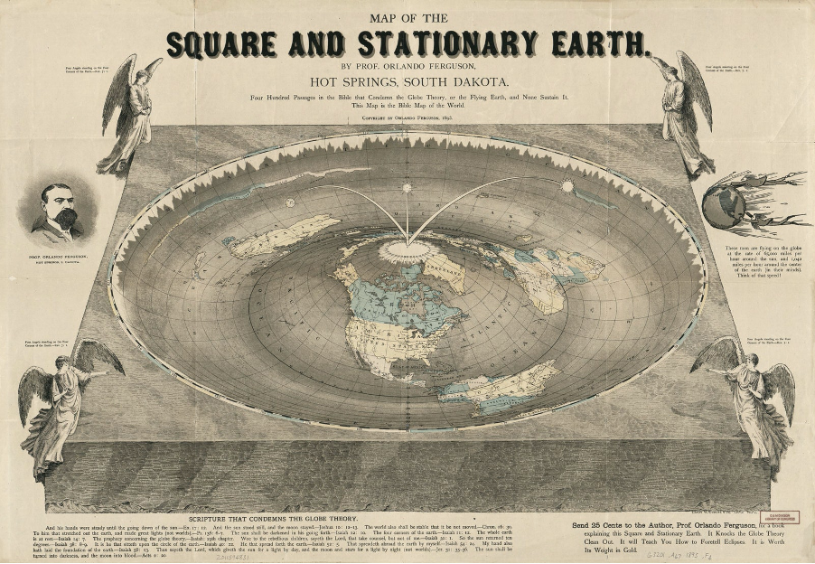
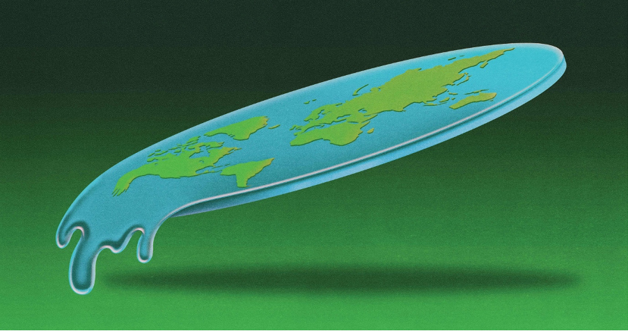
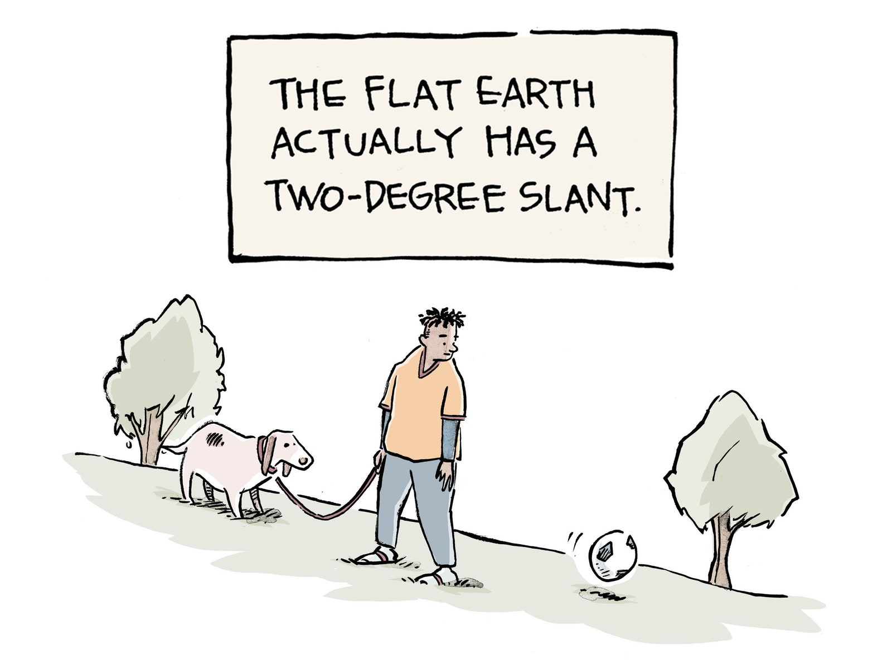

If a conspiracy theory is funny, that doesn't mean it's a joke

If you feel like flat Earth theory has gotten unaccountably popular recently, you’re right. According to Google Trends, search interest in the flat Earth conspiracy theory has already had several distinct peaks in the last year. Interest in the topic has been climbing steadily since late 2014, shortly after a faction of Daniel Shenton’s Flat Earth Society broke away to create its own website and forum. Encouraging people to distrust science completely, as the best way to experience reality by relying on one’s own senses to discern the true nature of the world around us.
News outlets contribute too, capitalising on the basic human interest in mysteries. Flat Earthers have received extensive coverage contributing to its ongoing popularity by feeding the appetite for these stories.
Why people who don’t believe in the flat Earth theory would waste their time reading about it. Reading about a conspiracy theory is not unlike watching an M. Night Shyamalan movie in the theatre. These theories posit alternative realities full of schemes and skulduggery… Did secret agents plant explosives in the Twin Towers to fake a terror attack? Did the Mafia undertake a hit against President Kennedy? Do interdimensional lizards secretly interbreed with humans while running the planet? Even if one is not convinced, there is plenty of entertainment there.
As for people who actually believe in flat Earth theory, you can’t really change their minds with photographic evidence or mathematical proof of a round Earth. People who believe in flat Earth have already decided that the world around them can’t possibly be what it seems, and so a conspiracy theory becomes a nice way of efficiently explaining what would otherwise be a confounding world.

The flat Earth theory is spreading online, and it’s hard to tell where the joke begins or ends. We can prove that hundreds of thousands of people are aware of an obscure belief that they weren’t before, but we can’t prove whether this has actually converted a substantial number of them to the cause. The percentage of Americans who believe in some conspiracy or another around the JFK assassination has hovered between 60 and 80 percent for the last 50 years. We don’t really believe them, but we know a lot about them, but maybe we do believe them a little, but we’re actually just sort of joking and playing.
If you can get people to ironically question systems like NASA and the federal government and the scientific process in general, you can sometimes get them to question those things for real.

Flat Earth trutherism isn’t as immediately dangerous as climate change denialism or the anti-vaccine backlash, but that doesn’t mean it’s totally harmless. It is important to maintain a level of concern about conspiracy theorists. They do things that harm society as a whole, like negate or dilute scientific reason. Looking at climate change denialism, that comes from just doubting the idea of expertise as a whole. Conspiracy theorists attack expertise.
The basic goal of a conspiracy theorist isn’t usually to prove that one specific theory is true or false, but to prove that nothing is provable, that all assertions are arbitrary. Arguing that this is the type of thinking that leads people to believe that absolutely everything is arbitrary and manipulative, and that anything they don’t agree with is fake news.